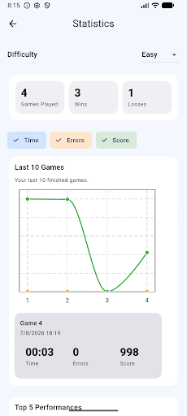
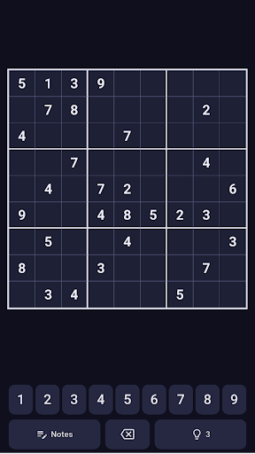
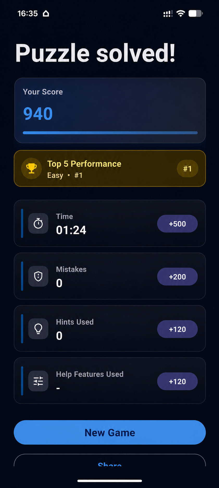

sudøku
Um app de Sudoku focado no prazer de resolver. Novos desafios são gerados diretamente no seu dispositivo, com ferramentas bem pensadas quando você quiser e um tabuleiro limpo quando não precisar delas.
Feito para o desafio
sudøku foi projetado para tornar o jogo cotidiano confortável: escolha uma dificuldade, concentre-se no tabuleiro e use tanta ou tão pouca ajuda quanto quiser.
Novos desafios, feitos no seu dispositivo
Os desafios são gerados e validados localmente, para que você sempre tenha novas partidas sem depender de um catálogo na nuvem.
Um tabuleiro pensado para concentração
Controles claros, números legíveis, feedback bem pensado e interações bem escolhidas mantêm a atenção na resolução.
Quatro níveis de dificuldade
Escolha o nível que combina com o momento, de uma partida tranquila a um desafio mais exigente.
Estatísticas locais úteis
Acompanhe seu histórico e desempenho enquanto seus dados permanecem no seu dispositivo.
Ferramentas bem pensadas
Anotações, dicas, proteção durante a pausa, revisão de erros e uma breve janela de correção ajudam sem sobrecarregar o tabuleiro.
Seu estilo, seu ritmo
Modos claro e escuro, vários temas de cor e ajuda opcional permitem adaptar o app ao seu jeito de jogar.
Veja o sudøku em ação
O app permanece visualmente tranquilo, oferecendo os controles e o feedback de que você precisa enquanto resolve.



Offline por design
A experiência principal de Sudoku funciona no seu dispositivo. Geração dos desafios, lógica de resolução, jogos ativos e estatísticas não dependem de um servidor de desafios nem de uma conta. Isso mantém o jogo rápido, robusto e independente.
A versão gratuita pode usar serviços da plataforma para publicidade e compras; esses serviços são separados do mecanismo local de geração dos desafios. Consulte a política de privacidade para detalhes.
Simplesmente um bom Sudoku
Uma experiência bem acabada, ferramentas úteis, condições justas e tecnologia que fica em segundo plano. Essa é toda a ideia.